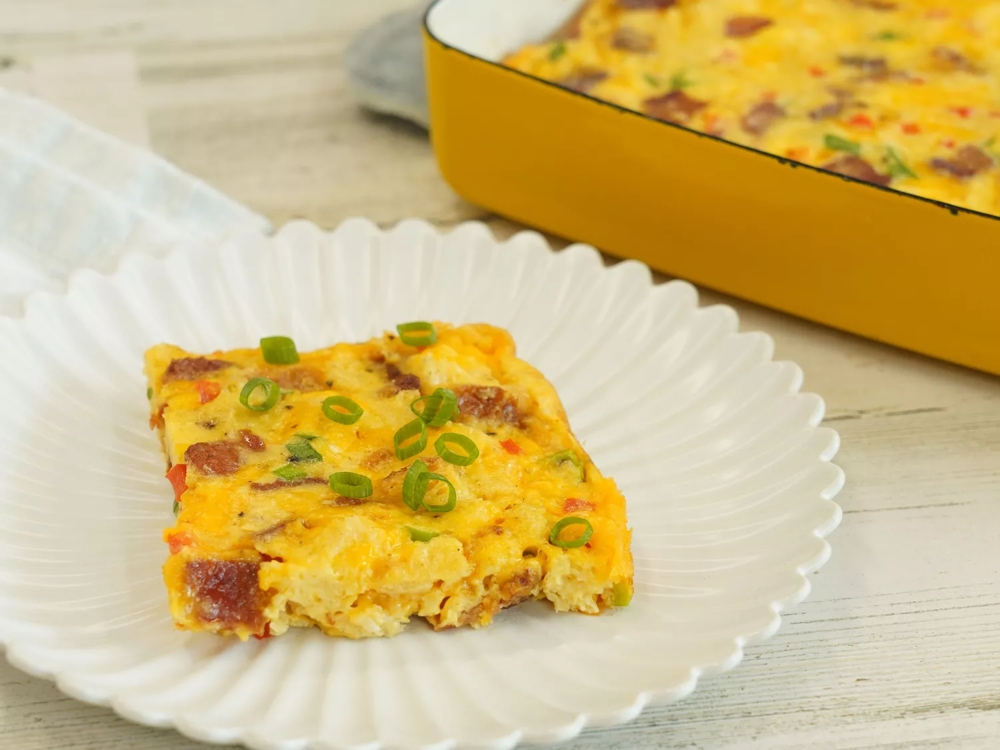

Home
The Best Egg Casserole

Description
This egg casserole recipe is quick, easy, and full of flavor. It's the perfect, low-maintenance breakfast to
serve a hungry crowd.
This easy egg casserole is the perfect make-ahead breakfast.
Ingredients
- 6 large eggs, whisked
- 1 cup shredded Cheddar cheese
- 6 slices bacon or ham, diced
- 2 slices bread, cubed
- ⅓ red bell pepper, diced
- 2 green onions, chopped
- 3 tablespoons milk
- ½ teaspoon minced garlic, or to taste (Optional)
- salt and ground black pepper to taste
Steps
- Gather all ingredients.
- Preheat the oven to 350 degrees F (175 degrees C). Grease a 9x13-inch baking dish.
- Mix eggs, cheese, bacon, bread, red bell pepper, green onion, milk, garlic, salt, and black pepper together
in a bowl until well-combined; pour into the prepared baking dish.
- Bake in the preheated oven until eggs are set, about 20 to 25 minutes.
HAPPY EATING AND ENJOY THE FREE EGG CASSEROLE RECIPE